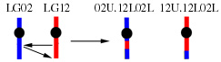

|
NOMENCLATURE INFORMATION
APPROVAL FOR GENE AND MUTANT NAMES
ADDITIONAL RESOURCES A Tutorial for Proposing Zebrafish Gene Nomenclature Laboratory Designations for Mutant Alleles Other nomenclature guidelines: Human, Mouse, Fly (Drosophila), Yeast (Saccharomyces), Gene families |
CONTENTS: |
1.1. Genes (loci) identified by mutation
1.1.1. The name of a gene identified by mutation should refer to the ostensible phenotype of the mutant without any inherent interpretation of the phenotype. It should not be too specific. Determining the molecular mechanism by which a phenotype is produced can be a formidable task and should not be inferred by the name of the gene. The name should be a mnemonic for the mutant phenotype. For example, cyclops is an excellent name for the mutation isolated in Eugene that produces a cyclopic phenotype.
1.1.2. The name should be unique, one or two words, and italicized. Longer names tend to be impractical to use. Avoid choosing names identical to those used in other species.
1.1.3. For mutations in different genes that all have similar phenotypes, a single name followed by consecutive numbers should not be used. This nomenclature makes the field less accessible to the outsider. A mutation in a second gene resulting in cyclopia could be called fused eyes, but should not be called cyclops2.
1.1.4. If the mutated gene has not yet been named or described in a publication and is known to be the orthologue of a mammalian gene, the approved mammalian gene name and symbol should be used, following the guidelines described below for naming genes identified by cloning.
Specific guidelines: Genes identified by mutation are typically named to reflect the mutant phenotype. Full gene names are lowercase italic, no hyphens. Gene symbols consist of three lowercase letters. The letters should be unique with respect to other named zebrafish mutants and genes and, if possible, gene symbols in mammalian species. The symbol should be derived from the full name. For example, the abbreviated name for cyclops is cyc. Numbers should generally not be used in naming a gene identified only by mutation.
Examples:
Names - cyclops, brass, no tail
Symbols - cyc, brs, ntlLocus and allele names should be registered at ZFIN.
1.2. Genes identified by cloning
Zebrafish gene designations should not be preceded by 'Z' or 'Zf'. Gene names should be lower case, italic. Punctuation such as hyphens and full stops (periods) in gene names are discouraged. When mammalian orthologues are known, the same name and abbreviation should be used if possible, except all letters are lower case, italic. When orthologous relationships are unclear, lower case letters may be appended. Different members of a gene family are sequentially numbered. Gene symbols should be lower case italicized letters or lower case letters and an italicized number or letter (no hyphen). Genes identified as homologues to human or mouse genes should use the same symbol, if possible, and thus are not limited to 3 letters.Examples:
Names - engrailed 1a, engrailed 2b
Symbols - eng1a, eng2b, msxa, msxbIn cases where the mammalian orthologue of a zebrafish gene has a different name that has been approved by the appropriate nomenclature committee, the approved mammalian name may be appended to the zebrafish name, lower case in parentheses.
Examples: syu (shh), swr (bmp2b)
Duplicated genes: Most of the zebrafish genome contains duplicated segments that probably result from an extra genome-wide duplication. This duplication occurred in the ray fin fish lineage after it diverged from the lobe fin lineage (that include avian or mammalian species). For this reason, zebrafish often have two copies of a gene that is present as a single copy in mammals.
In these cases, symbols for the two zebrafish genes should be the same as the approved symbol of the human orthologue followed by "a" or "b" to indicate that they are duplicate copies. Before these symbols are assigned, it is important to provide evidence by mapping that the two copies reside on duplicated chromosome segments. It is preferable that all copies in one of the duplicate chromosome segments use the same "a" or "b" suffix, although this will not always be possible for historical reasons.
This terminology should not be used for tandem duplicates or duplicates that resulted prior to the divergence of ray fin and lobe fin fish.
Examples: hoxa13a, hoxa13b
Special cases sometimes arise when naming gene duplicates that resulted from the ray-fin fish whole-genome duplication. When there is a unique mammalian orthologue, but addition of the a, b suffixes would conflict with a different mammalian gene symbol, then numerical suffixes .1, .2 should be appended to the orthologous mammalian gene symbol instead of a, b.
When mammalian gene duplications prevent identification of a unique mammalian orthologue, then an alternate gene symbol should be chosen. A possible choice would be an approved gene symbol from a unique non-mammalian orthologue. If necessary to avoid conflicts with existing mammalian gene symbols, the two zebrafish genes should then be distinguished from each other by addition of the terminal.1, .2 instead of a, b.
Examples: stat5.1, stat5.2
1.3. Genes identified only by genomic sequencing projects
Large-scale genome sequencing projects use a variety of prediction methods to identify both open reading frames and genes. Some of these genes are already known, others are new. Novel genes identified by these means that can not be named because they encode known motifs or because they are not members of a gene family are assigned a name comprised of a prefix, a clone name, and an integer. The prefix is used to specify the research institution that identified the gene (e.g., "si" for the Sanger Institute). A colon separates the prefix from the clone name. The clone name is the name of the clone from which the gene was first identified. If part of a gene is found in more than one clone, the name of the first clone in which the 5' portion of the gene is found takes precedence. A full stop (period) separates the clone name from the integer. Integers are assigned serially to genes found in the clone and do not indicate the order of genes.Examples: si:bz3c13.1, si:bz3c13.2, si:bz3c13.3
When genes initially identified by genomic sequencing projects are better diagnosed, the gene nomenclature will be changed to maintain consistency within gene families or to indicate orthology relationships with genes in other species.
1.4. Transcript variants
Transcript variants that originate from the same gene are not normally given different gene symbols and names. However, variants from a single locus can be distinguished by adding to the end of the full name a comma, "transcript variant", and a serial number; and by adding to the end of the symbol an underscore, "tv", and a serial number.Examples:
Names -
myosin VIa, transcript variant 1
myosin VIa, transcript variant 2
Symbols -
myo6a_tv1
myo6a_tv2
Wild-type and mutant alleles are indicated by superscript plus and mutant allele designation, respectively. Specific mutant alleles are designated by a superscript following the gene symbol. Alleles are given a laboratory-specific designation, e.g. b is Eugene; m is MGH, Boston; t is Tuebingen, Germany. (The full list can be found on ZFIN.) Other letters should not immediately follow the laboratory designation but may be appended to the end of the allele name. Dominant alleles have a d in the first position of the superscript to distinguish them from recessive alleles.
Examples:
cyc+, brs+
lofdt2, cycb16, cycm101, cyct219
To distinguish heterozygotes and homozygotes and multiple mutations on a single chromosome, each allele should be separated by a slash "/".
Examples:
rseb140/ rse+ (heterozygote, can be abbreviated rseb140/+)
rseb140/ rseb140 (homozygote, can be abbreviated rseb140/b140 or rseb140)
rseb140 dla+/ rse+ dladx2 (transheterozygote for rse and dla alleles on same chromosome)
The protein symbol is the same as the gene symbol, but non-italic and the first letter is uppercase.
Examples: Cyc, Brs, Eng1a, Eng2b, Ntl
In cases where the mammalian orthologue of a zebrafish protein has a different name that has been approved by the appropriate nomenclature committee, the approved mammalian name may be appended to the zebrafish name, non-italic, first letter uppercase2.
Examples: Syu (Shh), Swr (Bmp2b)
Note the differences between zebrafish and mammalian naming conventions:
species / gene / protein
zebrafish / shh/ Shh
human / SHH / SHH
mouse / Shh / SHH
4.1. Unlinked loci4.1.1. Homozygous genotypes, the genotype at each locus is listed in order according to Linkage Group number, from 1 to 25, with a semicolon to separate loci on different chromosomes.
Examples: rseb140; golb16
4.1.2. Heterozygous genotypes, loci on homologous chromosomes are separated by a slash.
Examples: rseb140/rse+; golb16/golm592
Another case is a new mutation induced in a line expressing a transgene as a marker, for example, using a GFP line to find interesting mutations that alter GFP expression.
Example: Tg(NBT:MAPT-GFP)zc1; abcb000
4.2. Linked loci - the haplotype on each chromosome is written as a sequence, with a space separating syntenic loci, and loci are placed in the order they appear on the Linkage Group, top to bottom. Homologous chromosomes are separated by a slash, and non-homologous chromosomes are separated by semicolons.
Examples: rseb140 leot1; golb16
4.3. Unmapped loci - genotypes of unmapped loci are listed alphabetically within braces following genotypes of mapped loci on different chromosomes.
Examples: rseb140; {editz253; esrtj236} (edi and esr are unmapped, all three loci are on different chromosomes)
4.4. Poorly resolved loci on same chromosome - genotypes of loci on the same chromosome at locations that are undetermined or poorly resolved are listed alphabetically within braces.
Examples:
{abcb000 defm000} (poorly resolved loci on same chromosome)
rseb140 {abcb000 defm000} leot1 (poorly resolved loci in a known interval between mapped loci, all on same chromosome)
Phenotypes are designated by the name or symbol of the mutation in italics.
Examples: cyclops, cyc
Chromosomes are not yet cytologically defined. Linkage groups are designated by non-italic numerals, each linkage group corresponds to one of the 25 haploid chromosomes. Chromosome differences have not been observed between males and females.
Examples:
LG1 to LG25Chromosome rearrangements: Common prefixes include:
Cr, complex rearrangement
Df, deficiency
Dp, duplication
In, inversion
Is, insertion
T, translocation
Tg, transgene
6.1. Deficiencies: The general format for naming a deficiency is:
Df(LG##)xxxallele
Df indicated deficiency. The term xxx should describe the salient features of the deficiency, as determined by the investigator. In cases where the deficiency removes sequences from a named gene, it should contain the standard symbol for that gene. The allele name should follow standard nomenclature conventions (laboratory designation followed by allele name).
The linkage group where the deficiency maps should be specified by its number (##) using two digits (i.e., 03 for LG 3) so that computers will order them properly.
Example: Df(LG12)dlx3b380
6.2. Translocations: The general format for naming translocations depends upon the type of translocation:
6.2.1. Reciprocal translocations:
These rearrangements have two separate chromosomal elements, and each element has a distinct name:
T(LG##;LG##)xxxallele,##U.##L and T(LG##;LG##)xxxallele,##U.##L
T indicates translocation. The elements in the parentheses are the linkage groups involved, the lower numbered linkage group is listed first, and the linkage groups are separated by a semicolon. The linkage groups should be specified by their numbers (##) using two digits (i.e., 03 for LG 3) so that computers will order them properly.
The term xxx should describe some salient feature of the translocation, as determined by the investigator. In cases where the translocation moves a named gene primarily studied by the investigator, xxx would usually be the standard symbol for that gene. Alternatively, xxx could just be an experimental series number.
The allele name should follow standard nomenclature conventions (laboratory designation followed by allele name, superscripted). After the allele name comes a comma, and then a phrase that indicates the new order of the chromosome, starting from the top of the chromosome as displayed by convention. The first number (##) is the LG number, followed by upper case U to indicate the upper arm of a chromosome or by upper case L to indicate the lower arm of a chromosome. The location of the centromere is indicated by a period. No spaces.
Example:
T(LG02;LG12)cycb213,02U.12L02L and T(LG02;LG12)cycb213,12U.12L02L
This example illustrates a reciprocal translocation where a portion of the lower arm of LG12 was translocated interstitially into the proximal lower arm of LG2 and a portion of the lower arm of LG2 was translocated to the distal lower arm of LG12.
6.2.2. Resolved translocations:
In some cases, the two elements of the translocation can separate, a mutant line would have just one of the elements. This results in the animal being monosomic for some chromosome regions and trisomic for others. In these cases, the mutant line would be designated with just one of the elements rather than two as in the reciprocal designation above. The allele name would remain the same to indicate their common origin and common breakpoint.
Example: T(LG02;LG12)cycb213,02U.12L02L
6.3. Transgenes: The general format for naming a transgene is:
Tg(xxx)allele
Tg indicates transgene. The name xxx should describe the most salient features of the transgene, as determined by the investigator. Brevity and clarity in the transgene name are favored, in general, over exhaustive detail. In cases where the insertion utilizes sequences from a named gene, it should contain the standard symbol for that gene. The allele name should follow standard nomenclature conventions (laboratory designation followed by allele name).
If the insertion is a compound construct consisting of regulatory sequence linked to coding region, the insertion may be designated using the symbol of the regulatory region, separated by a colon from the symbol for the coding region.
Regulatory sequence could be derived from either an enhancer or promoter, and may be denoted by the symbol of the regulated gene. Regulatory sequences should be listed to the left of the colon, and coding sequences to the right of the colon. Regulatory or coding sequence fusions should be separated by hyphens. Regulatory sequences may be further identified by the length of the sequence upstream from the start site.
Example: Tg(promoter:gene)allele
Example: Tg(-3.5hhex-ERE:sptb-GFP)bz1 Here, a fusion protein of spectrin beta (sptb) and GFP is driven by a combination of an estrogen response element and an upstream enhancer containing 3.5kb 5' to the hhex gene.
Sometimes within a single construct, there are multiple cassettes, each containing regulatory and coding sequences. In this case, it is necessary to distinguish between what is coding in the first cassette with what is regulatory in the second. Multiple cassettes may be distinguished using a comma.
Example: Tg(isl3-RARE:GAL4,UAS:GFP)allele Here, isl3 promoter and retinoic acid response element drive GAL4, and UAS drives GFP.
A semi-colon is used to represent transgenic lines with multiple constructs that have inserted on different linkage groups.
Example: Tg(myl7:rtTA)rk1; Tg(TRE:EGFP)rk2 is a line with two insertions on two different linkage groups.
A space is used between Tg constructs to represent transgenic lines with multiple constructs that have unknown or syntenic insertion sites.
Example: Tg(shha:GFP)g30 Tg(-3.4neurog1: GFP)sb4 is a line with two insertions that have either unknown insertion sites, or are on the same linkage group.
7.1. When mutations in the same gene are found independently in more than one laboratory and given different names, then the name that appears first in the literature will be given priority. Sometimes different mutant alleles of the same gene can have very different phenotypes and it may take a while before it is shown that the mutations are in the same gene. The first published name would get priority and all other alleles would adopt this designation.
7.2. When a mutation is found in a previously cloned zebrafish gene (which has been published), then the mutant will take the cloned gene's name. For example, a mutation was induced in the msxb gene. The mutation in the gene is also be referred to as msxb (in this case, Df(LG01)msxb, because the mutation is a deficiency).
7.3. If both the cloned gene and the mutation are already known by different names and at some later point they are found to be the same gene, then the name of the mutation usually takes priority. The unique name of the mutation may be more relevant to the function of the gene than the cloned gene's name, and this unique mutant name may be easier to remember or use than the gene name. For example, an author may find it more convenient to refer to cyclops (cyc), rather than nodal-related 2 (ndr2). Exceptions would include cases where orthologous relationships with genes in other species are well established and these orthologues have a commonly used name. For example, an author may find it preferable to refer to sonic hedgehog (shh), rather than the sonic you (syu) gene.